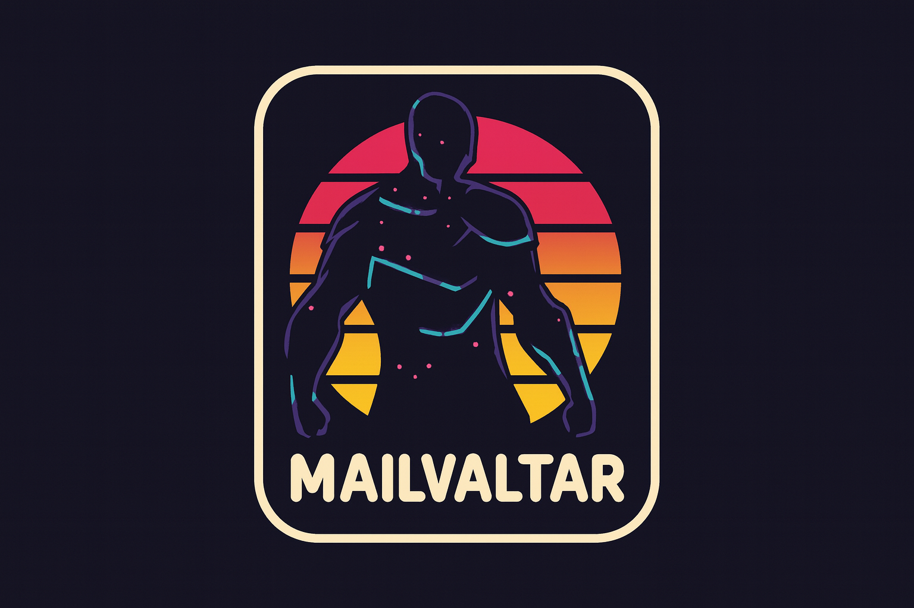

Tipa dives into Frosthaven’s icy battle scenarios, discussing strategy and in-game seasonal effects.
Tipa dives into Frosthaven’s icy battle scenarios, discussing strategy and in-game seasonal effects.
Heartless reviews the new Halloween-themed map for New World, noting its spooky charm and performance issues.
 Bhagpuss gets caught up in the hype of Ananta's cinematic gameplay and wonders how games can look this much like movies.
Bhagpuss gets caught up in the hype of Ananta's cinematic gameplay and wonders how games can look this much like movies.

Mailvatar delves into the thrilling survival of Dune: Awakening, finding danger and discovery at every turn.
 Belghast finds a nifty dongle to convert wired headphones to wireless, while juggling multiple game adventures.
Belghast finds a nifty dongle to convert wired headphones to wireless, while juggling multiple game adventures.
 Wilhelm highlights the exciting new content and challenges waiting in LOTRO's upcoming Kingdoms of Harad expansion.
Wilhelm highlights the exciting new content and challenges waiting in LOTRO's upcoming Kingdoms of Harad expansion.
The Boardgames Chronicle
A deep dive into the latest GMT wargame, The Siege of Pensacola, offers strategic depth and historical immersion.
A deep dive into the latest GMT wargame, The Siege of Pensacola, offers strategic depth and historical immersion.
 A harrowing encounter with a sandworm in Dune: Awakening leads to hard lessons and rebuilding efforts.
A harrowing encounter with a sandworm in Dune: Awakening leads to hard lessons and rebuilding efforts.
 Emily shares her love for walking and how it helps maintain her exercise routine amidst a busy life.
Emily shares her love for walking and how it helps maintain her exercise routine amidst a busy life.
Scripting News
Dave Winer discusses WordPress's potential to reshape the web and explores the nuances of 'social web.'
Dave Winer discusses WordPress's potential to reshape the web and explores the nuances of 'social web.'
The Old New Thing
Raymond Chen advises on using comments in code to clarify action, not intention, for better API sample clarity.
Raymond Chen advises on using comments in code to clarify action, not intention, for better API sample clarity.
Aywren's Nook
Aywren shares how an unexpected influx of dad jokes spiced up a PVP match in FFXIV, proving humor boosts morale.
Aywren shares how an unexpected influx of dad jokes spiced up a PVP match in FFXIV, proving humor boosts morale.